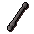
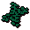
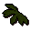
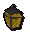
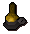
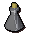
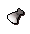

Crafting - Glass Making
Introduction
When your Crafting level reaches 4, you can begin to make glass objects other than beer glasses. To make glass items, you will need the following:
| Tool | Location Found | Use |
![[image]](../../img/main/kbase/items/misc/emptybucket.gif) Empty bucket Empty bucket |
Can be purchased from most general stores. | Can be filled with sand for use in glassmaking. |
| Glassblowing pipe | Entrana, or north-west of the Ranging Guild. | You can use a glassblowing pipe on molten glass to make glass items. |
Seaweed![[image]](../../img/main/kbase/items/misc/swamp_weed.gif) Swamp weed Swamp weedOR Kelp |
Found along the coastline of RuneScape or in Dorgesh-Kaan South Dungeon. Kelp can be found in the underwater area discovered during Recipe for Disaster. | Use on a range or on a fire to make soda ash. |
![[image]](../../img/main/kbase/items/misc/sodaash.gif) Soda ash Soda ash |
You get soda ash by burning seaweed, swamp weed or kelp. | Use it on a furnace when you have a bucket of sand in your inventory to make molten glass. |
 For your convenience, you may find it useful to make a seaweed net. These can hold up to ten seaweed each, making your seaweed-gathering expeditions all the more efficient. See Crafting - Weaving to find out how to make a seaweed net.
For your convenience, you may find it useful to make a seaweed net. These can hold up to ten seaweed each, making your seaweed-gathering expeditions all the more efficient. See Crafting - Weaving to find out how to make a seaweed net.

Use the glassblowing pipe on the molten glass and a list of items will appear, all of which you are able to make, determined by your current Crafting level. A complete list is shown below:
Item |
Crafting Required |
Crafting Experience Gained |
![[image]](../../img/main/kbase/items/misc/beer_glass.gif) Beer glass |
1 |
17.5 |
| Candle lantern | 4 |
19 |
| Oil lamp | 12 |
25 |
![[image]](../../img/main/kbase/items/lanturns_candle_torch/oil_lantern.gif) Oil lantern Oil lantern |
26 |
50 |
| Glass vial | 33 |
35 |
![[image]](../../img/main/kbase/items/misc/fishbowl_empty1.gif) Fishbowl Fishbowl |
42 |
42.5 |
| Glass orb | 46 |
52.5 |
![[image]](../../img/main/kbase/items/lens/bullseye_lens.gif) Bullseye lantern lens |
49 |
55 |
![[image]](../../img/main/kbase/items/misc/dorgeshuun_lightbulb.gif) Dorgeshuun light orb* |
87 |
70 |
* You will receive a further 104 Crafting experience when you add a copper filament to a Dorgeshuun lightorb. Click here for more information about Dorgeshuun lightorbs. Click here to view the Crafting FAQs

More articles in
Crafting
|
|
|
Further Help
Need more help? Come chat with us!
|
|